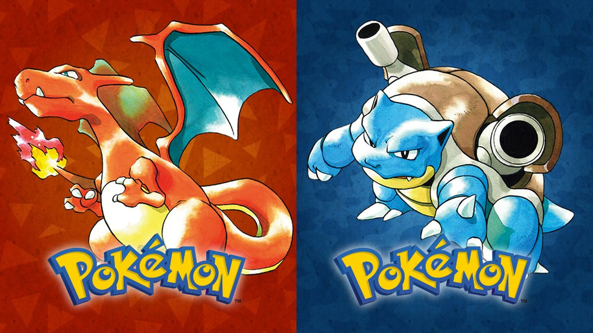
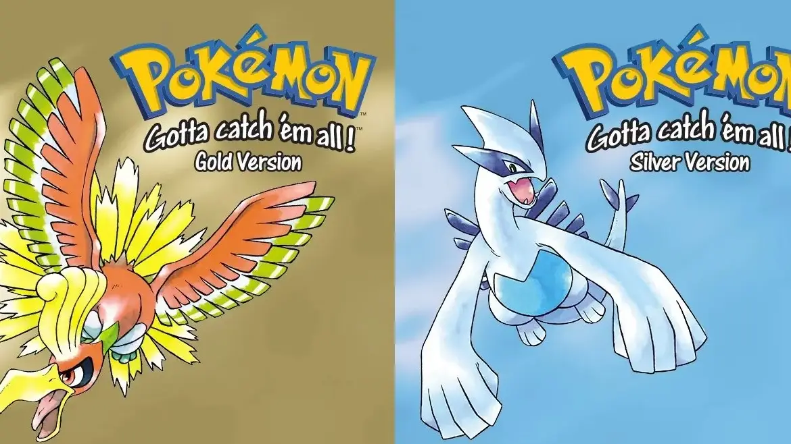
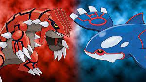
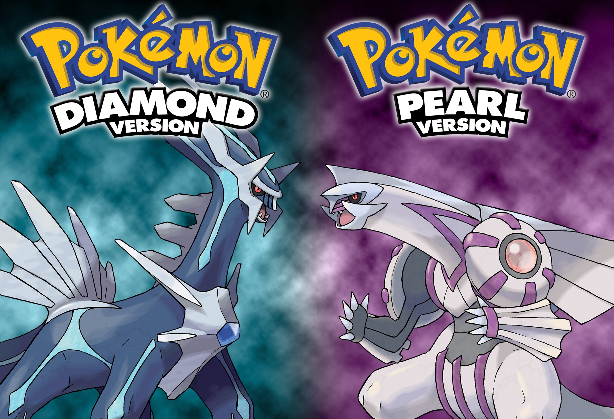
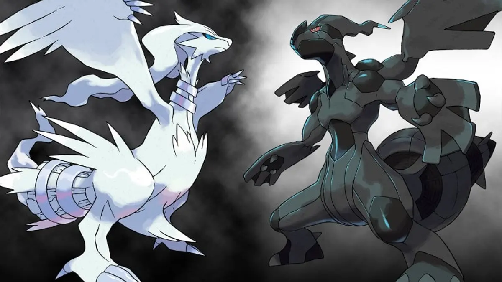

| Titulo | Resumo | Datos tecnicos | Trailers |
|---|---|---|---|
| Pokemon Rojo y Azul |
En "Pokémon Rojo y Azul", los jugadores asumen el papel de un joven entrenador Pokémon en la región de Kanto. Su objetivo es capturar y entrenar Pokémon mientras viajan por la región, desafiando a los líderes de gimnasio para obtener medallas y eventualmente enfrentarse a la élite de la Liga Pokémon. Mientras tanto, deben detener los planes nefastos del Equipo Rocket, una organización criminal que busca aprovechar el poder de los Pokémon para sus propios fines. Con la ayuda de amigos como el Profesor Oak, el jugador explorará ciudades, cuevas y otros lugares en busca de Pokémon mientras se embarcan en una emocionante aventura para convertirse en el campeón de la región de Kanto. |
|
 |
| Pokemon Oro y Plata |
En "Pokémon Oro y Plata", los jugadores se embarcan en una aventura en la región de Johto, una tierra llena de nuevos Pokémon por descubrir y desafíos por superar. Siguiendo el legado de "Pokémon Rojo y Azul", los jugadores asumen el papel de un joven entrenador Pokémon cuyo objetivo es convertirse en el campeón de la Liga Pokémon. A lo largo del camino, deben capturar Pokémon, desafiar a los líderes de gimnasio para obtener medallas y detener los malvados planes del Equipo Rocket. Además, los jugadores tendrán la oportunidad de explorar la región de Kanto después de completar la Liga Pokémon en Johto, brindando una experiencia de juego expansiva y emocionante. |
|
 |
| Pokemon Rubi y Zafiro |
En "Pokémon Rubí y Zafiro", los jugadores exploran la región de Hoenn, donde se enfrentan al Equipo Magma y al Equipo Aqua en su lucha por controlar la tierra y el mar. Los jugadores deben recolectar ocho medallas de gimnasio y desafiar a la élite de la Liga Pokémon mientras intentan detener los planes malvados de estas dos organizaciones. Además, los jugadores tienen la tarea de detener una crisis climática desencadenada por los planes de los equipos villanos. |
|
 |
| Pokemon Diamante y Perla |
En "Pokémon Diamante y Perla", los jugadores exploran la región de Sinnoh, donde se embarcan en una emocionante aventura para convertirse en el campeón de la Liga Pokémon. En su viaje, los entrenadores se enfrentan a desafíos de gimnasios, participan en concursos Pokémon y enfrentan la amenaza del Equipo Galaxia, una organización malvada que busca controlar el tiempo y el espacio. Con la ayuda de nuevos Pokémon y amigos, los jugadores deben detener los planes nefastos del Equipo Galaxia y salvar la región de Sinnoh. |
|
 |
| Pokemon Negro y Blanco |
En "Pokémon Blanco y Negro", los jugadores se sumergen en la región de Teselia, donde se encuentran con nuevos Pokémon y desafíos. Como entrenador Pokémon, su objetivo es recolectar medallas de gimnasio, derrotar al Equipo Plasma, una organización villana que busca liberar a los Pokémon de los humanos, y convertirse en el campeón de la Liga Pokémon. Además, los jugadores exploran las complejidades de la relación entre humanos y Pokémon mientras desentrañan los misterios detrás de la legendaria figura conocida como el Dragón Original. |
|
 |